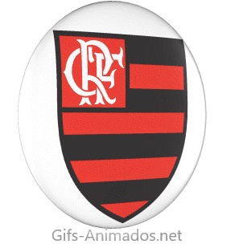

ESCUDO DO FLAMENGO
O escudo do Flamengo evoluiu ao longo de sua história, começando em 1895 com um design para o remo, que incluía uma âncora e dois remos cruzados, com a sigla "CRF" no canto.
Com a criação do departamento de futebol em 1911, foi necessário criar um novo escudo para evitar conflitos, resultando no design com as famosas oito faixas horizontais em preto e vermelho e as letras entrelaçadas no canto superior esquerdo.
A estrela dourada acima do escudo foi adicionada em 1981 para simbolizar a conquista do título mundial.
